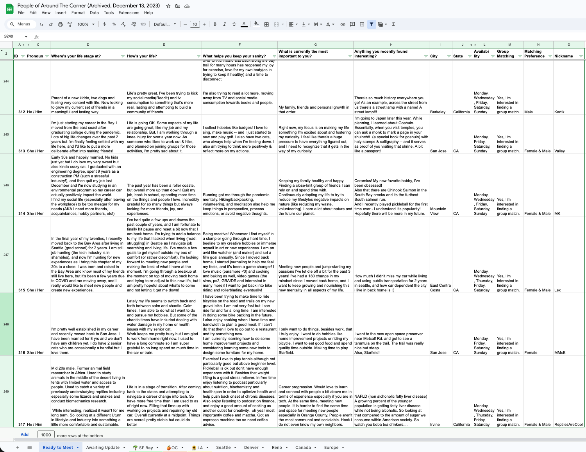
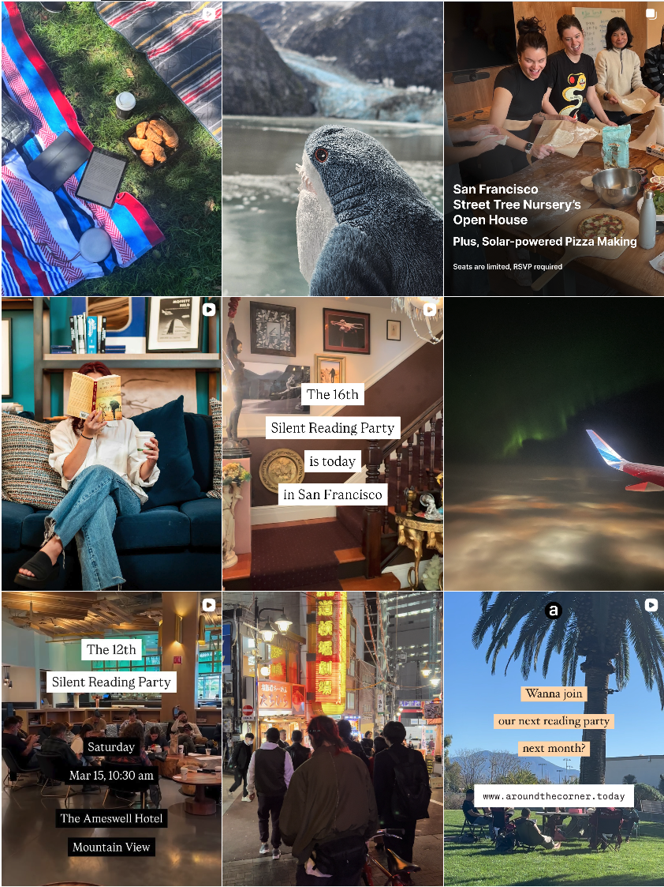

Summary
Around The Corner began in 2023 as a simple experiment: each week after the pandemic, I met two strangers for coffee. I found them through anonymous long-form writing shared on social media. Within three months, more than 150 people had signed up to participate.
It became clear this shouldn’t remain a series of 1:1 coffees with me. The underlying behavior—discovering people through stories rather than profiles—could scale. I built the first system using Google Forms and Sheets, then in 2024 invited one of the early participants to join as a technical co-founder. We launched our first website in January 2024.

By September 2025, Around The Corner had grown organically to 2,500+ users across California, with 38% three-month retention. The platform facilitated over 800 matches, hosted 30+ events, and partnered with five hospitality and F&B businesses. Events consistently sold out, with ~93% attendance and low no-show rates. We validated strong product–user fit but hit structural limits in the original platform that constrained iteration speed, monetization, and runway.
In September 2025, we made the decision to wind down that version of the product and rebuild from first principles.
What we built
The first version of Around The Corner was a writing-first, offline-anchored community. People introduced themselves through lived experiences, then met in person over coffee in their city.
New members applied through five long-form prompts designed to surface experiences rather than labels. There were no self-staged photos and no emphasis on age, gender, job title, or ethnicity. Profiles allowed a single faceless image capturing an everyday or personally meaningful moment.

After acceptance, members could deepen their profiles through ongoing journaling. We used AI to generate reflective follow-up questions that helped users expand and revisit their stories over time. The journaling system was built using GPT-3.5 and Claude Sonnet.
Offline, we hosted monthly gatherings—silent reading parties, coffee tastings, and small group events—to reinforce trust and continuity. To explore B2B distribution and revenue, we partnered with five hospitality and F&B businesses across the SF Bay Area, Greater Los Angeles, and Orange County.

Around The Corner is currently being rebuilt.
There is one open co-founder seat.
Latest updates: www.aroundthecorner.today
Learned & still learning
- All founders must be able to sell.
- Behavior reveals truth faster than stated intent
- Most ideas can be tested before a “product” exists
- Rejection is redirection.